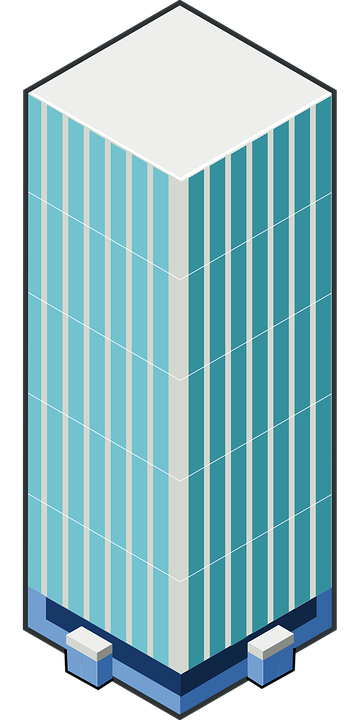

Extend Yourself - Goobi: Earthquake Engineering
 Design Requirements
Design Requirements
Build a new structure that meets specific design requirements. Build a structure that is a minimum of 24 inches tall that can withstand an earthquake. Think about how to build a stable base to support this height requirement. How many of each piece will you need? What is the new perimeter and area for this structure?

Research Building Materials
Research building materials and designs engineers actually use to make actual buildings earthquake-proof. Are there certain building materials engineers prefer? Do engineers use heavy or light materials, rigid or bendable materials when building with earthquakes in mind?
Research Earthquake-Proof Buildings
Research buildings in our world that were built to withstand earthquakes. What features do they have that make them able to withstand earthquakes? How are they similar or different to regular structures?